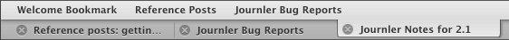
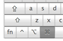
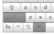
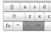

Tabbed Editing
Tabs are the revolutionary way to access multiple documents with ease. Modern web browsers feature tabs so you can move between web pages without opening up duplicates of your web browser or even new windows. Journler features tabs so you can access more than one entry in the same space without ever losing your place.
The tab bar is always active even if you can't see it. It appears when you begin viewing multiple entries or at launch if you have checked the appropriate option (see Appearance Preferences).
By default, when you select an entry in the Browse Table or click on an internal link, Journler loads the new entry into the same tab. When you want to open an entry in a new tab, hold down the control key (ctrl) and click on the entry in the Browse Table. Near the bottom of the menu you will see two items, Open in New Tab and Open in New Window.
Tip: Bypass the context menu and use keyboard modifiers as you select an entry from the list to open it automatically in a new tab or window. Read more.
Opening a Linked Entry into a New Tab
If you have linked to an entry from within another entry's text, you can quickly open the link into its own tab. The shortcuts are the same as in Safari.|  | Hold down the command key to open an entry in a new tab. |  | Hold down the shift and command keys to open an entry in a new tab and simultaneously select it. |
You can open up as many tabs as you need. Journler doesn't mind. If you run out of space in the tab bar, Journler creates a tabs menu on the far right from which you can continue to access your entries. When you need to close a tab, select Close Tab from the File menu or simply click the appropriate circle-x. To move between tabs select the needed tab or use Select Next Tab and Select Previous Tab in the View menu.
Separate Windows
If tabs aren't you're thing edit your entries in a separate window instead. By default, when you create a new entry Journler places it in the main content area. You can change this behavior in Advanced Preferences.Opening a Linked Entry into a New Window
|  | Hold down the command and option keys to open an entry in a new window. The window will automatically come to the fore |
Like tabs, you may open as many windows as you need and Journler will handle their management. To move between windows, use the list at the bottom of the Window menu. Entry windows give you full access to all of Journler's features. You can customize their toolbars and operate on the entries in them using all of Journler's related menu items.
Tabs and windows are accessible with keyboard modifiers from almost anywhere you can select an entry or resource. Read more.